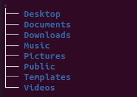

– Linux navigation –
Introduction
This is my first time navigating a Linux system so I can't teach you everything you need to know
to use it effectively. I'm just going to try out some basic terminal commands and file
manipulation and share that with you.
There are a lot of Linux distrubutions out there, I chose to install the latest LTS version of
Ubuntu via Virtual Box. I will not go into details about the installation here, you can find
many tutorials about that online if you haven't done that already. So lets open up the terminal and get started!
Basic navigation
Print working directory - pwd
Shows the current directory you are in. If you have just started your system it's most likely your user account's home directory.
$ pwd /home/yourusername
List - ls
Lists all the content inside the directory. It's possible to add some optional flags to the command to modify the default behavior.
$ ls Desktop Documents Downloads Music Pictures Public Templates Videos
It's is also possible to use tree command to get more fancy visualization. I had to
install it first, the terminal gave me directions on how to do that.
$ tree 
Change directory - cd
This is the most basic command line there is. The directory changes according to what you type
after cd. You can give an absolute path or a relative path which refers to a directory
within the current directory. Typing cd alone will bring you to the home directory
of the user. cd - will bring you to the recent directory you were in. cd ..
will bring you to the parent directory of the directory you are in.
$ cd Documents $ pwd /home/yourusername/Documents $ cd .. $ pwd /home/yourusername $ cd - /home/yourusername/Documents
File manipulation
Make directory - mkdir
This command is used to create empty directories. After mkdir you write the name of
the directory you want to create an it's created in the current directory. To create any
directories necessary to construct a given directory path, you can use the -p option. This
allows you to create nested directories in one step.
$ mkdir demo $ ls demo $ mkdir -p demo2/test $ ls demo demo2 $ cd demo2 $ ls test
Create a file - touch
This command creates an empty file. After touch you write the name of the file
you want to create and it's created in the current directory. It's also possible to use an
absolute path to choose another directory.
$ cd $ touch file1 $ ls file1 $ touch /home/yourusername/file2 $ ls file1 file2
Move - mv
This command is used to move files. It can also be used to rename files and directories.
When using mv to rename you have to remember that Linux system will not
prevent you from certain destructive actions. If you choose a name that exists already the
previous file will be overwritten and there is no way to recover it.
$ mv file1 Documents $ ls Documents file1 $ cd Documents $ mv file1 newname $ ls newname
Remove - rm
This command removes files. If you want to remove directories you can use rmdir,
this can only be used with empty directories. if you want to remove a non-empty directory you
can use rm -r, this will remove all of the directory's content and the directory
it self. These actions cannot be undone.
$ rm newname $ rmdir demo $ rm -r demo2
Copy - cp
This command copies files. If you want to copy directories you can use cp -r.
Note that as with the mv command it's possible to overwrite files if you
choose a name that already exists.
$ cp newname newname2 $ ls newname newname2
Conclusion
I had alot of fun trying out the Linux system. There are alot of commands I still have
to try out but I won't cover more here, this could then go on forever. Below is a link
to a Unix/Linux command line cheet sheet for you to check out, good luck!
CheetSheet!